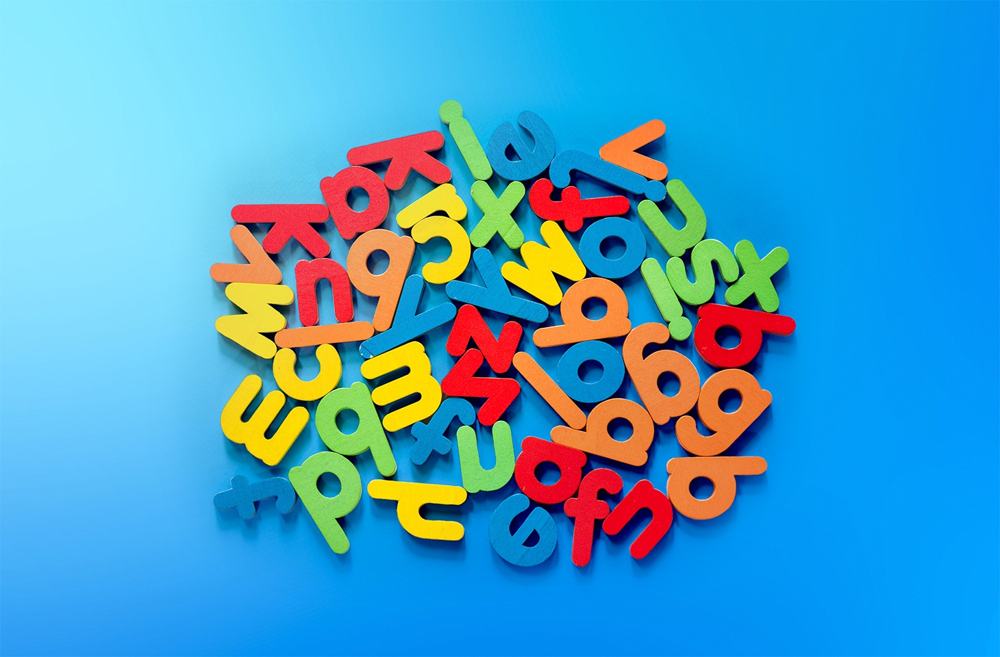

Créer un mot de passe inoubliable
Introduction
Dans un monde où la sécurité numérique est primordiale, créer des mots de passe forts tout en les gardant mémorisables est devenu un véritable défi. Voici un guide pratique pour vous aider à créer des mots de passe à la fois sécurisés et faciles à retenir.
Les principes d'un mot de passe fort
- Longueur : Au moins 12 caractères - plus c'est long, plus c'est fort.
- Complexité : Mélange de lettres majuscules et minuscules, chiffres et caractères spéciaux.
- Unicité : Un mot de passe différent pour chaque compte.
- Imprévisibilité : Éviter les informations personnelles évidentes (dates de naissance, noms de famille).
Techniques de mémorisation
Voici quelques méthodes efficaces pour créer des mots de passe mémorables :
- La méthode de la phrase : Créez une phrase et utilisez les premières lettres. Exemple : "J'ai acheté 8 chocolats pour Noël !" devient "Ja8c#pN!"
- La substitution : Remplacez des lettres par des chiffres ou symboles similaires. Exemple : "Password" devient "P@$$w0rd"
- La méthode des mots aléatoires : Combinez plusieurs mots au hasard avec des caractères spéciaux. Exemple : "Cheval#Bleu42!Nuage"
Bonnes pratiques de sécurité
- Gestionnaire de mots de passe : Utilisez un gestionnaire de mots de passe fiable pour stocker vos identifiants de manière sécurisée.
- Double authentification : Activez-la quand c'est possible pour une couche de sécurité supplémentaire.
- Renouvellement : Changez vos mots de passe régulièrement, surtout pour les comptes sensibles.
- Vigilance : Ne partagez jamais vos mots de passe et ne les stockez pas en clair sur votre appareil.
Conclusion
La création d'un mot de passe fort et mémorable n'est pas une tâche impossible. En appliquant ces principes et techniques, vous pouvez sécuriser vos comptes tout en gardant le contrôle de vos accès. N'oubliez pas que la sécurité de vos données en ligne commence par un bon mot de passe.